An iterative method is presented for solving linear systems 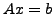 and
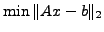, with  being large and sparse, or a fast linear
operator. The method is based on the Golub-Kahan bidiagonalization
process. It is analytically equivalent to the standard method of MINRES
applied to the normal equation
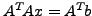, so that the quantities
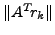 are monotonically decreasing (where
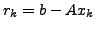 is
the residual for the current iterate 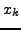). In practice we observe that
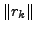 also decreases monotonically. Compared to LSQR, for which
only is monotonic, it is safer to terminate LSMR early.
being large and sparse, or a fast linear
operator. The method is based on the Golub-Kahan bidiagonalization
process. It is analytically equivalent to the standard method of MINRES
applied to the normal equation
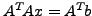, so that the quantities
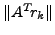 are monotonically decreasing (where
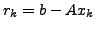 is
the residual for the current iterate 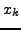). In practice we observe that
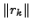 also decreases monotonically. Compared to LSQR, for which
only is monotonic, it is safer to terminate LSMR early.